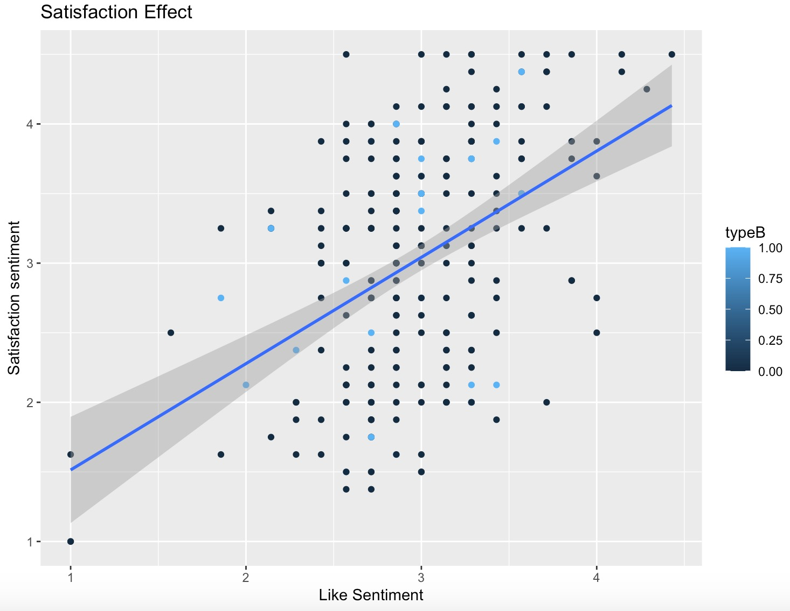
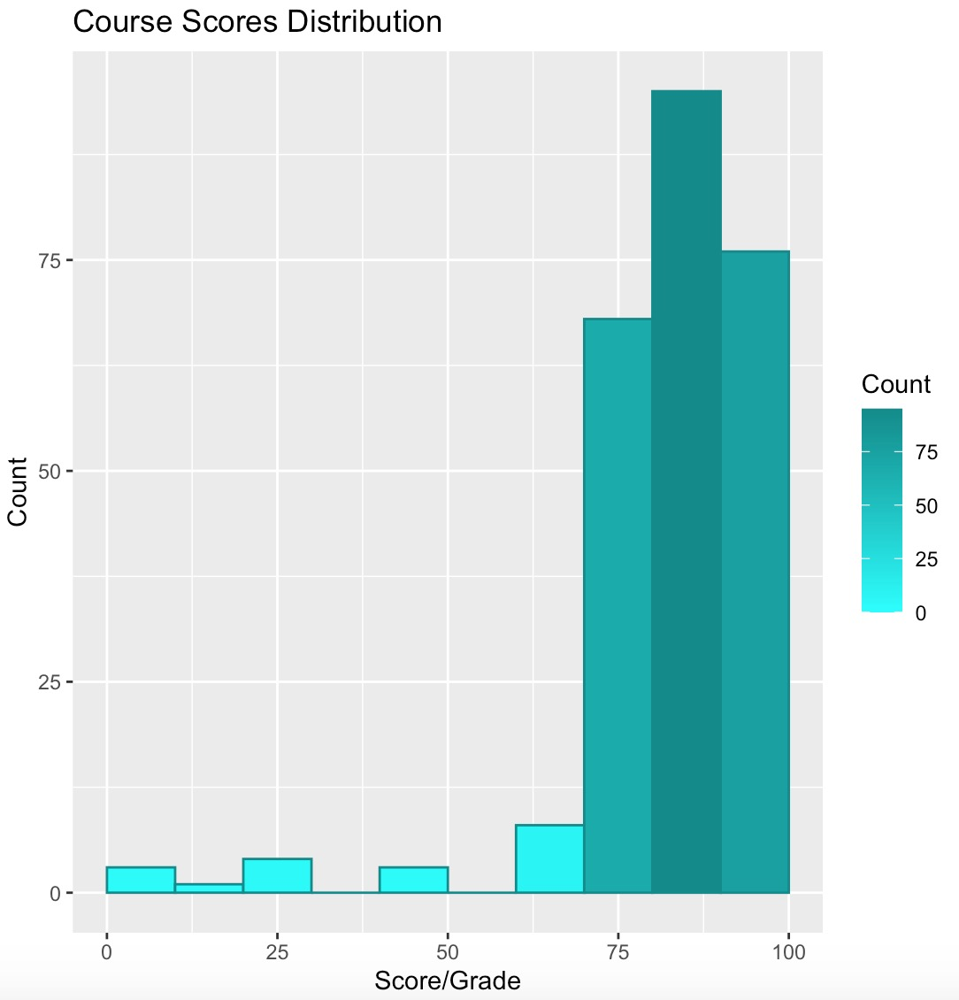
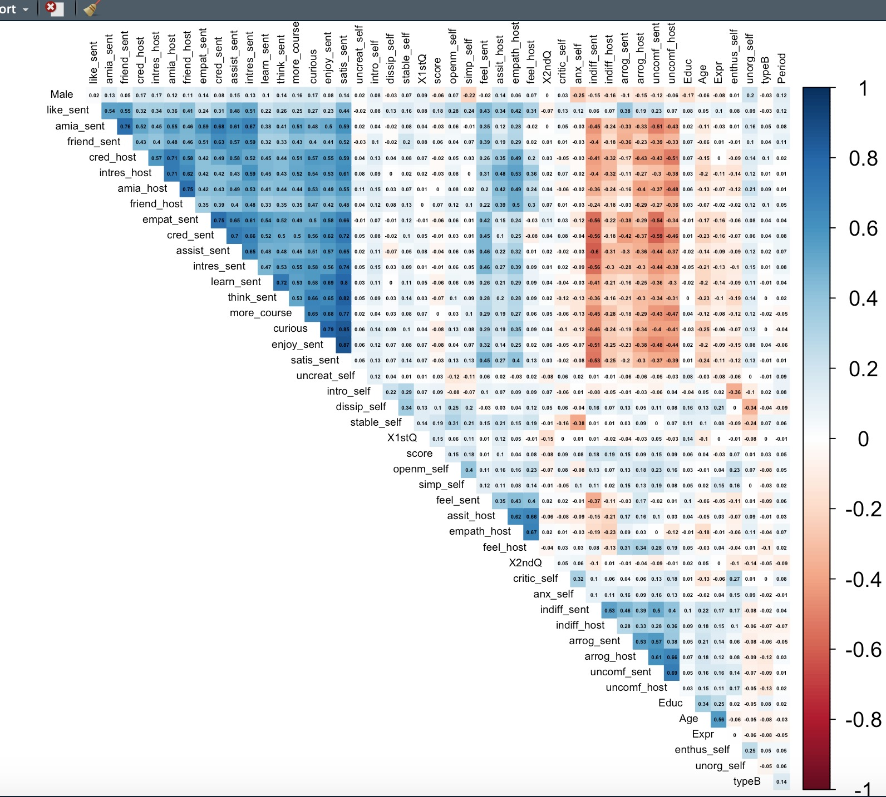

CONTROL · A
Fixed instructor path
Learners complete the course without choosing the virtual instructor.
A compact field study of virtual instructor choice, learner satisfaction, and course outcomes. Explore the question, the models, and the evidence in one place.
The study compares learners who followed a fixed virtual-instructor path with learners who could choose between instructors. It asks whether that moment of agency carries through to satisfaction and performance.
Learners complete the course without choosing the virtual instructor.
Learners choose between virtual instructor characters before continuing.
Observations are organized across two periods to support a difference-in-differences comparison.
The results are strongest as an exploratory read of the learner experience. The report itself is careful about the limits of the sample and observational design.
The difference-in-differences specification did not produce a statistically clear treatment effect over time.
The choice group was generally more satisfied with the instructor and course in the observed data.
Positive sentiment toward the instructor moves with satisfaction, a relationship visible in the regression figures.
The original project outputs are kept in the repository so each visual can be traced back to the underlying analysis.



Difference-in-differences · OLS · linear probability · logistic regression · descriptive summaries · correlation analysis.
The figures and report are historical project outputs. Treat the conclusions as exploratory evidence rather than a general causal estimate.
Read the structured README, inspect the R analysis, or download the full report.